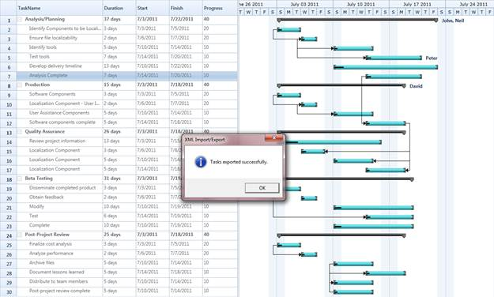
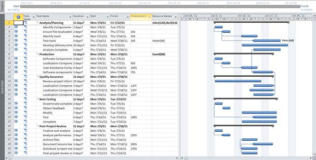

Essential Gantt allows you to export and import the task details. You can export the task detail as XML files and import them again when needed. You can open the exported XML files in MS Project too. The XML file, exported from MS Project can also be opened in Gantt control. You can import and export the details using the provided APIs.
Properties
|
Property |
Description |
Type |
Data Type |
Reference links |
|
ImportFromXMLCommand |
Command binding used to import the XML file generated from MS Project to populate data’s in Gantt control. |
Command |
DelegateCommand |
|
|
ExportToXMLCommand |
Command binding used to export the XML file generated from Gantt control to populate data’s in MS Project. |
Command |
DelegateCommand |
|
Methods
|
Method |
Description |
Parameters |
Type |
Return Type |
Reference links |
|
ExportToXML() |
Responsible for exporting the GanttControl to MSProject XML File. |
- |
- |
bool |
NA |
|
ImportFromXML() |
Reponsible for importing the data from MS Project XML file to GanttControl. |
- |
- |
bool |
NA |
Import/Export Task Details from/to XML
The following code illustrates how to Import and Export Task Details from or to XML
|
[XAML] <Sync:GanttControl x:Name="Gantt" /> <StackPanel Orientation="Horizontal" HorizontalAlignment="Center">
Margin="0,10,0,0" Width="200"
Margin="0,10,0,0" Width="200"
|
|
[C#] private void SaveButton_Click(object sender, System.Windows.RoutedEventArgs e)
|

Figure 36: XML Export Import
Importing the exported document in MS Project,

Figure 37: Exported document opened in MS Project.
Samples Link
To view samples:
1. Select Start -> Programs -> Syncfusion -> Essential Studio x.x.xx -> Dashboard.
2. Click Run Samples for Silverlight under User Interface Edition panel .
3. Select Gantt.
4. Expand the Import Export Features item in the Sample Browser.
5. Choose the Import Export Demo samples to launch.